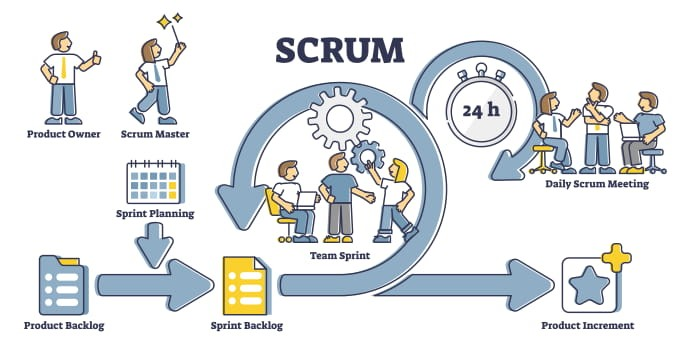
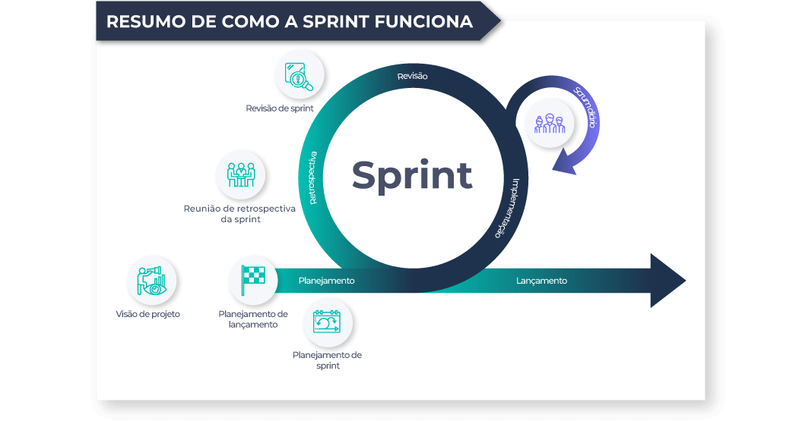

Processo de Desenvolvimento de Software
A equipe adotou a metodologia ágil SCRUM, com adaptações específicas para incluir reuniões semanais com o cliente e a equipe. Essa abordagem tem como objetivo promover entregas incrementais de valor e alinhar as expectativas de todas as partes envolvidas.
A imagem abaixo mostra de maneira ilustrativa, como funciona a metodologia Scrum que será aplicada no projeto, mencionada no texto anterior.

Imagem 2: Metodologia Scrum - Fonte: Benner - Tecnologia: Scrum
O desenvolvimento será conduzido em Sprints semanais, permitindo entregas frequentes e um fluxo contínuo de feedback do cliente.
Abaixo, a imagem resume como funciona uma sprint, aplicada ao desenvolvimento do nosso projeto. 
Imagem 2: Resumo de como uma sprint funciona - Fonte: Artia - Sprint
Reuniões Semanais
Reunião com o Cliente
Realizada semanalmente com o objetivo de:
- Alinhar expectativas;
- Apresentar o progresso realizado na Sprint anterior;
- Discutir alterações ou novas demandas;
- Revisar as prioridades do projeto.
Reunião com a Equipe
Realizada semanalmente, antes da reunião com o cliente, com o objetivo de:
- Planejar as tarefas da Sprint atual;
- Organizar os próximos passos;
- Preparar os itens a serem apresentados ao cliente.
Execução das Tarefas
As tarefas da Sprint serão realizadas em pares, seguindo o princípio de trabalho colaborativo. Essa abordagem promove:
- Revisão contínua do trabalho realizado;
- Compartilhamento de conhecimento entre os membros da equipe;
- Maior qualidade nas entregas.
Ferramentas Utilizadas
Para o desenvolvimento do aplicativo de detecção de doenças em plantas, serão utilizadas as seguintes ferramentas:
Frontend:
- React Native: Para desenvolvimento da interface do usuário, garantindo alta performance e compatibilidade com dispositivos móveis.
- Expo: Framework que simplifica o desenvolvimento, construção e deploy de aplicativos móveis.
Backend:
- NestJS: Framework robusto para desenvolvimento do backend, baseado em Node.js, com foco em modularidade e escalabilidade.
- PostgreSQL: Banco de dados relacional, escolhido por sua confiabilidade, desempenho e suporte a grandes volumes de dados.
Organização com Notion e GitHub A equipe utiliza duas ferramentas principais para organização e documentação:
Notion - Utilizado para organizar e centralizar atividades operacionais, como:
- Planejamento de Sprints: Metas, tarefas e cronograma de cada Sprint;
- Organização de Reuniões: Agendas, pautas e decisões das reuniões semanais;
- Pesquisas sobre Plantas: Informações técnicas e científicas para embasar as funcionalidades do aplicativo;
- Histórias de Usuário: Detalhamento das necessidades e expectativas dos usuários;
- Padrões de Desenvolvimento: Definição de boas práticas e convenções de código;
- Organização da Equipe: Responsabilidades, horários e alocação de tarefas.
GitHub - Utilizado como o repositório central para toda a documentação do projeto, incluindo:
- Atas de Reunião: Registro detalhado das reuniões semanais com o cliente e a equipe;
- Documento de Arquitetura: Detalhes técnicos sobre a estrutura e os componentes do aplicativo;
- Plano de Testes: Estratégias, casos de teste e resultados para garantir a qualidade das entregas;
- Documento de Requisitos: Descrição detalhada das funcionalidades e necessidades do sistema;
- Documento de Visão: Declaração dos objetivos e escopo do projeto, alinhando expectativas entre a equipe e o cliente;
- Histórico de Versões: Controle de mudanças nos documentos e no código-fonte.
Incrementos de Software
Ao final de cada Sprint, serão entregues funcionalidades incrementais que serão testadas e validadas antes da apresentação ao cliente e também atenderão às prioridades e expectativas definidas durante as reuniões.
Papeis e Responsabilidades
Scrum Master
- Responsável por facilitar o processo de desenvolvimento, garantindo que a equipe siga as práticas do SCRUM. Ele também atua removendo impedimentos que possam afetar o progresso do time.
Equipe de Desenvolvimento
- Responsável por planejar e executar as tarefas, identificar e resolver impedimentos, e garantir que as funcionalidades atendam às expectativas do cliente.
Cliente
- Participa ativamente no processo, fornecendo feedback contínuo e ajudando na priorização das entregas.